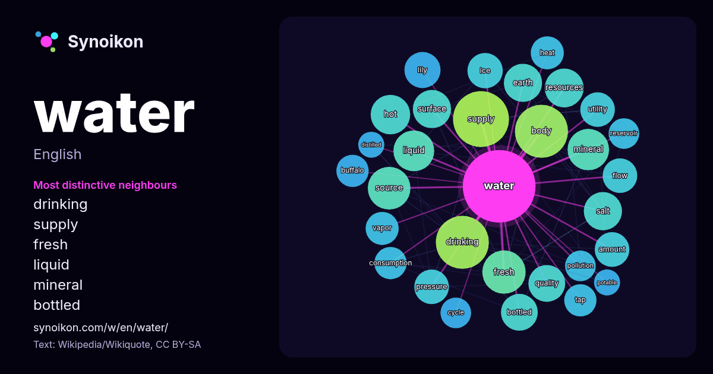

English · popular word
water
The words found around it in 2297 instances from Wikipedia, Wikiquote, Hacker News.

Most distinctive neighbours
- drinking 46×
- supply 33×
- fresh 30×
- liquid 28×
- mineral 27×
- bottled 27×
- lily 24×
- salt 21×
- vapor 21×
- utility 20×
- tap 20×
- hot 18×
- body 18×
- consumption 18×
- earth 17×
- pollution 17×
- buffalo 16×
- resources 16×
- quality 16×
- surface 15×
× = how many times more often than in general Wikipedia text.
Most frequent neighbours
- supply 60
- body 54
- drinking 54
- american 37
- fresh 36
- source 35
- mineral 33
- liquid 32
- systems 31
- hot 30
- air 29
- resources 29
- earth 28
- salt 28
- surface 28
- form 27
- bottled 26
- film 26
- quality 26
- fire 25
In context
- Water is an inorganic compound with the chemical formula H2O. It is a transparent, tasteless, odorless, and nearly colorless chemical substance. It is Wikipedia snippets · Water
- This Is Water: Some Thoughts, Delivered on a Significant Occasion, about Living a Compassionate Life is an essay by David Foster Wallace. The text originates Wikipedia snippets · This Is Water
- The Water may refer to: The Water (Middle-earth), a river in J. R. R. Tolkien's legendarium The Water (Colin MacIntyre album), a 2008 album by Colin McIntyre Wikipedia snippets · The Water
- Drinking water or potable water is water safe for ingestion, either when drunk directly in liquid form or consumed indirectly through food preparation Wikipedia snippets · Drinking water
- Water polo is a competitive team sport played in water between two teams of seven players each. The game consists of four quarters in which the teams attempt Wikipedia snippets · Water polo
- A body of water is a significant accumulation of water on the surface of the earth. The term most often refers to oceans, seas, and lakes, but it includes Wikipedia snippets · Body of water
- Water intoxication, also known as water poisoning, hyperhydration, overhydration, or water toxemia, is a potentially fatal disturbance in brain functions Wikipedia snippets · Water intoxication
- Fresh water or freshwater is any naturally occurring liquid or frozen water containing low concentrations of dissolved salts and other total dissolved Wikipedia snippets · Fresh water
More words
- art
- autumn
- bell
- bread
- bridge
- cat
- city
- climate
- clock
- death
- desert
- dog
- family
- food
- forest
- garden
- god
- gold
- health
- heart
- history
- honey
- horse
- island
- language
- life
- map
- mirror
- money
- mother
- mountain
- nature
- power
- rain
- road
- salt
- science
- shadow
- silence
- song
- star
- storm
- summer
- tea
- time
- train
- truth
- winter
- work
Precomputed on 2026-10-09 with default settings (±5 words, medium corpus). The interactive map can refresh it with live data.